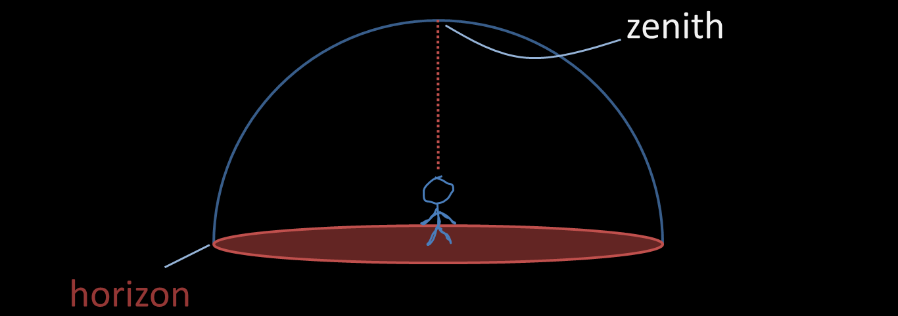
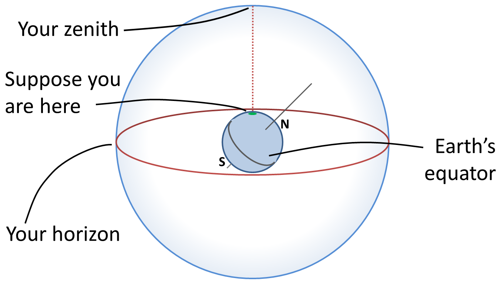
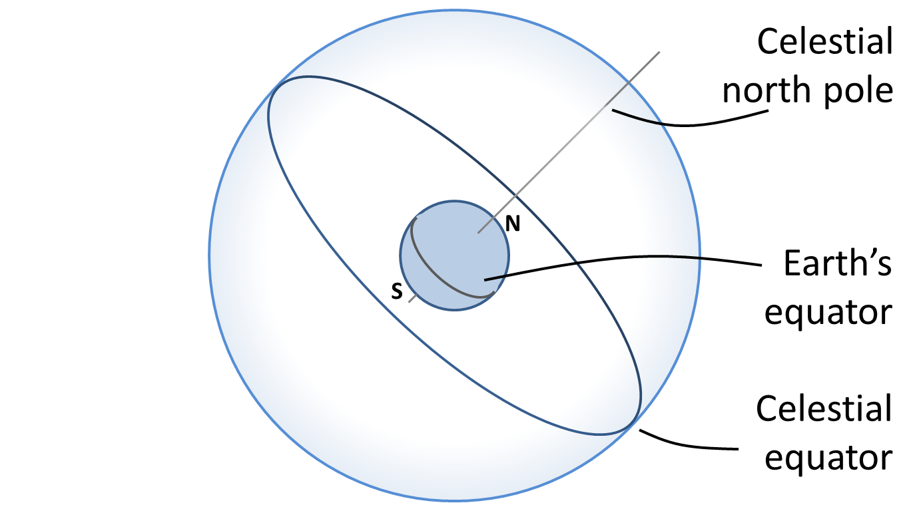
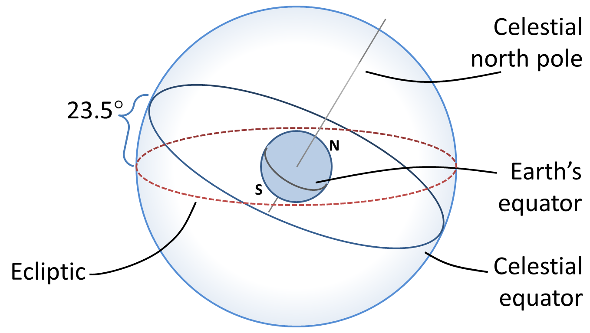
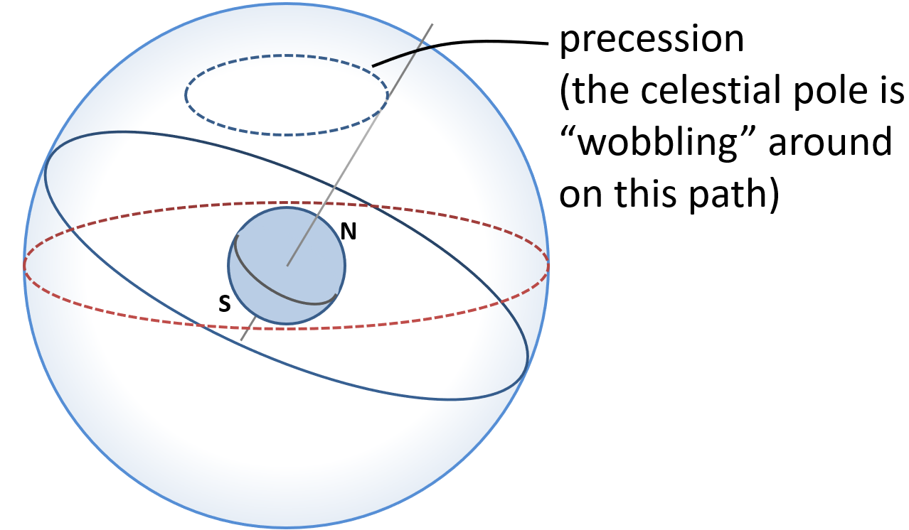
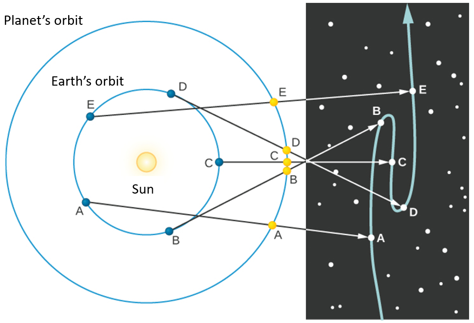
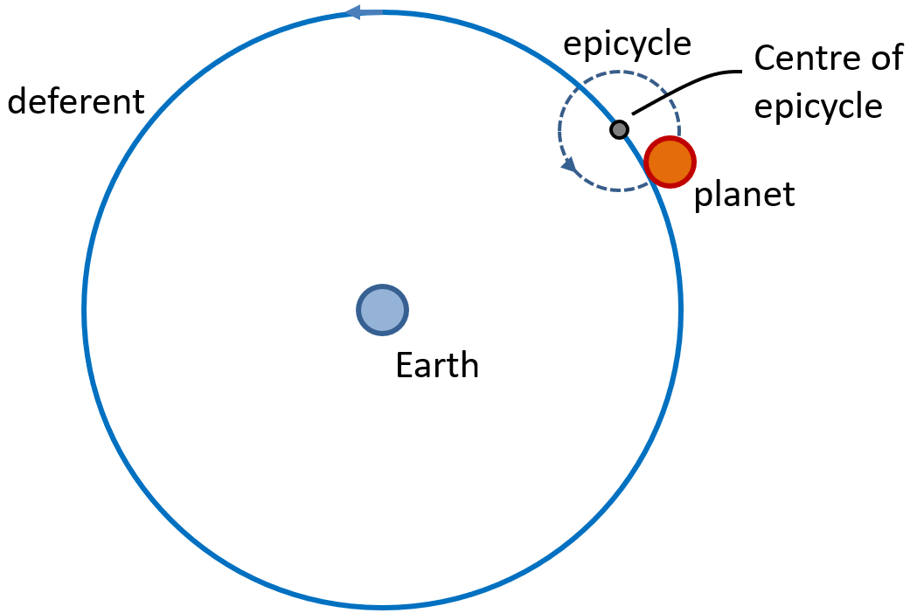
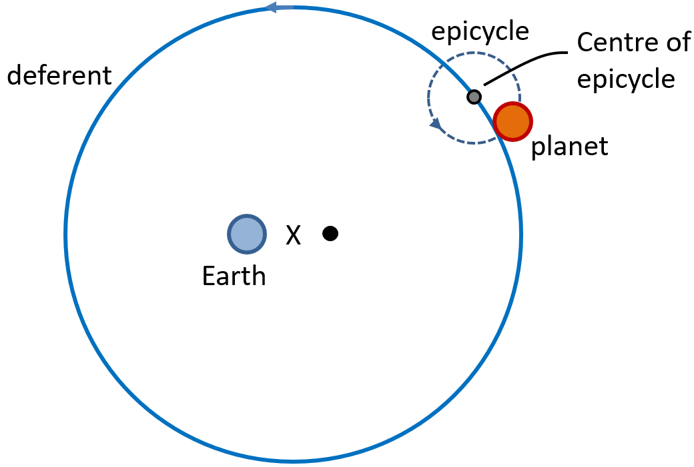

Our senses suggest to us that Earth is the center of the universe, the hub around which the heavens turn. This geocentric (Earth-centered) view was what almost everyone believed. After all, it is simple, logical, and seemingly self-evident.
If you go on a camping trip or live far from city lights, your view of the sky on a clear night is pretty much identical to that seen by people all over the world before the invention of the telescope. Gazing up, you get the impression that the sky is a great hollow dome with you at the center, and all the stars are an equal distance from you on the surface of the dome. The top of that dome, the point directly above your head, is called the zenith, and where the dome meets Earth is called the horizon.
If you lie back in an open field and observe the night sky for hours, you will see stars rising on the eastern horizon (just as the Sun and Moon do), moving across the dome of the sky in the course of the night, and setting on the western horizon. Watching the sky turn like this night after night, you might eventually get the idea that the dome of the sky is really part of a great sphere that is turning around you, bringing different stars into view as it turns. The early Greeks regarded the sky as just such a celestial sphere. Some thought of it as an actual sphere of transparent crystalline material, with the stars embedded in it like tiny jewels.
As the celestial sphere rotates, the objects on it maintain their positions with respect to one another. A grouping of stars such as the Big Dipper has the same shape during the course of the night. During a single night, even objects we know to have significant motions of their own, such as the nearby planets, seem fixed relative to the stars. Only meteors —brief "shooting stars" that flash into view for just a few seconds— move appreciably with respect to other objects on the celestial sphere. We can use the fact that the entire celestial sphere seems to turn together to help us set up systems for keeping track of what things are visible in the sky and where they happen to be at a given time.
Imagine a line going through Earth, connecting the North and South Poles. This is Earth’s axis, and Earth rotates about this line. If we extend this imaginary line outward from Earth, the points where this line intersects the celestial sphere are called the north celestial pole and the south celestial pole. As Earth rotates about its axis, the sky appears to turn in the opposite direction around those celestial poles. We can also (in our imagination) throw Earth’s equator onto the sky and call this the celestial equator. It lies halfway between the celestial poles.
If you stood at the North Pole of Earth, for example, you would see the north celestial pole overhead, at your zenith and the celestial equator would lie along your horizon. As you watched the stars during the course of the night, they would all circle around the celestial pole, with none rising or setting. Only the northern half of the sky is ever visible to an observer at the North Pole. Similarly, an observer at the South Pole would see only the southern half of the sky.
If you were at Earth’s equator, on the other hand, you see the celestial equator pass overhead through your zenith. The celestial poles, being 90° from the celestial equator, must then be at the north and south points on your horizon. As the sky turns, all stars rise and set; they move straight up from the east side of the horizon and set straight down on the west side. During a 24-hour period, all stars are above the horizon exactly half the time.
On any given day, we can think of the Sun as being located at some position on the hypothetical celestial sphere. For thousands of years, astronomers have been aware that the Sun does more than just rise and set. It changes position gradually on the celestial sphere, moving each day about 1° to the east relative to the stars. Very reasonably, the ancients thought this meant the Sun was slowly moving around Earth, taking a period of time we call 1 year to make a full circle. The path the Sun appears to take around the celestial sphere each year is called the ecliptic. Because of its motion on the ecliptic, the Sun rises about 4 minutes later each day with respect to the stars. The ecliptic does not lie along the celestial equator but is inclined to it at an angle of about 23.5°. In other words, the Sun’s annual path in the sky is not linked with Earth’s equator.
The Sun is not the only object that moves among the fixed stars. The Moon and each of the planets that are visible to the unaided eye — Mercury, Venus, Mars, Jupiter, Saturn, and Uranus — also change their positions slowly from day to day. During a single day, the Moon and planets all rise and set as Earth turns, just as the Sun and stars do. But like the Sun, they have independent motions among the stars, superimposed on the daily rotation of the celestial sphere. Noticing these motions, the Greeks of 2000 years ago distinguished between what they called the fixed stars and the wandering stars, or planets. The word "planet," in fact, means "wanderer" in ancient Greek. The ancient astronomers dedicated a unit of time, the week, to the seven objects that move on their own; that’s why there are 7 days in a week. The Moon, being Earth’s nearest celestial neighbor, has the fastest apparent motion; it completes a trip around the sky in about 1 month (or moonth). To do this, the Moon moves about 12°, or 24 times its own apparent width on the sky, each day.
The individual paths of the planets in the sky all lie close to the ecliptic, but not exactly on it. They always found in the sky within a narrow 18-degree-wide belt, centered on the ecliptic, called the zodiac (the root of the term "zodiac" is the same as that of the word "zoo" and means a collection of animals; many of the patterns of stars within the zodiac belt reminded the ancients of animals, such as a fish or a goat).
The sun appears to rise in the east, sweep across the sky and set in the west, but that journey is short in winter and much longer in summer. During winter, the sun's height above the horizon at noon is not very great, we have a short winter and a long night; but as weeks pass by, the sun rises higher and higher until it is twelve hours above the horizon and twelve hours below it. This time is called spring equinox, where the day and night are of equal length.
As more weeks pass by, the day lengthens and the night shortens as the sun reaches higher after the spring equinox, but there comes a point where the sun reaches the same height for several days, and then the height starts decreasing. This point where the sun keeps reaching the same height is called the summer solistice. When the sun's height becomes gradually lower, the day and night would become equal once again, this time its called autumn equinox. When the sun's height gets even lower, it sinks down to a particular level, keeps reaching that height for several days, and then the height starts increasing back again. The point at which the sun's height at the lowest is called the winter solistice.
If there were no clouds in the sky and we were on a flat plain with nothing to obstruct our view, we could see about 3000 stars with the unaided eye. To find their way around such a multitude, the ancients found groupings of stars that made some familiar geometric pattern or resembled something they knew, these groupins were called constellations. The ancient Chinese, Egyptians, and Greeks, among others, found their own groupings of stars. Today, we use the term constellation to mean one of 88 sectors into which we divide the sky.
Students are sometimes puzzled because the constellations seldom resemble the people or animals for which they were named. In all likelihood, the Greeks themselves did not name groupings of stars because they looked like actual people or subjects. Rather, they named sections of the sky in honor of the characters in their mythology and then fit the star configurations to the animals and people as best they could.
For a ling time, people knew that the Earth was round. The writings of Greek philosopher Aristotle (384–322 BCE), summarize many of the ideas of his day. Aristotle cited convincing arguments that Earth must be round. First is the fact that as the Moon enters or emerges from Earth’s shadow during an eclipse of the Moon, the shape of the shadow seen on the Moon is always round. Only a spherical object always produces a round shadow. If Earth were a disk, for example, there would be some occasions when the sunlight would strike it edge-on and its shadow on the Moon would be a line.
As a second argument, Aristotle explained that travelers who go south a significant distance are able to observe stars that are not visible farther north. The height of the North Star (the star nearest the north celestial pole) decreases as a traveler moves south. On a flat Earth, everyone would see the same stars overhead. The only possible explanation is that the traveler must have moved over a curved surface on Earth, showing stars from a different angle.
One Greek thinker, Aristarchus of Samos (310–230 BCE), even suggested that Earth was moving around the Sun, but Aristotle and most of the ancient Greek scholars rejected this idea. One of the reasons for their conclusion was the thought that if Earth moved about the Sun, they would be observing the stars from different places along Earth’s orbit. As Earth moved along, nearby stars should shift their positions in the sky relative to more distant stars. In a similar way, we see foreground objects appear to move against a more distant background whenever we are in motion. When we ride on a train, the trees in the foreground appear to shift their position relative to distant hills as the train rolls by. Unconsciously, we use this phenomenon all of the time to estimate distances around us.
There was a great astronomer by the name of Hipparchus, who was born in Nicaea in what is present-day Turkey. He erected an observatory on the island of Rhodes around 150 BCE. By observing the stars and comparing his data with older observations, Hipparchus made one of his most remarkable discoveries: the position in the sky of the north celestial pole had altered over the previous century and a half.
He did this by noting the precise locations stars rose and set during equinoxes (the twice yearly dates when night length and day length are exactly 12 hours). He compared his data with observations made by an earlier Greek astronomer, Timoarchus, about 160 years earlier. He noticed that as the years went by the stars were rising and setting in slightly different locations. Hipparchus concluded that the equinoxes were moving ("precessing") through the zodiac, and that the rate of precession was not less than 1° in a century.
Recall that the north celestial pole is just the projection of Earth’s North Pole into the sky. If the north celestial pole is wobbling around, then Earth itself must be doing the wobbling. Today, we understand that the direction in which Earth’s axis points does indeed change slowly but regularly, a motion we call precession.
The slow movement of the pole causes the earth's equator to cut the plane of the ecliptic at a different point each year, and therefore the equinoxes will never occur precisely at the same time in successive years until the circumpolar circle is complete. Given that most Greeks thought the earth did not move, Hipparchus probably did not believe the earth’s orientation in space was changing, instead he would have thought the heavens were slowly realigning.
There was a great astronomer named Claudius Ptolemy; his most important contribution was a geometric representation of the solar system that predicted the positions of the planets for any desired date and time. Hipparchus, not having enough data on hand to solve the problem himself, had instead amassed observational material for posterity to use. Ptolemy supplemented this material with new observations of his own and produced a cosmological model that endured more than a thousand years.
Today, we beleive that the planets revolve around the Sun. When observing the sky, the planets normally tend to move in the eastward direction. However, there are certain times where the planet seems to moving west for some time, and then going eastward again. This is easy to explain today, first take a look at this diagram:
This type of motion is called retrograde motion. It is an apparent change in the movement of the planet through the sky. The letters on the diagram show where Earth and the planet are at different times. By following the lines from each Earth position through each corresponding position of the planet, you can see how the retrograde path of planet looks against the background stars.
Normally, planets move eastward in the sky over the weeks and months as they orbit the Sun, but from positions B to D, as Earth passes the planet in our example, it appears to drift backward, moving west in the sky. Even though it is actually moving to the east, the faster-moving Earth has overtaken it and seems, from our perspective, to be leaving it behind.
The backward motion of planets is much easier for us to understand today, but Ptolemy was faced with the far more complex problem of explaining such motion while assuming a stationary Earth. Furthermore,because the Greeks believed that celestial motions had to be circles, Ptolemy had to construct his model using circles alone. To do it, he needed dozens of circles, some moving around other circles.
Ptolemy solved the problem of explaining the observed motions of planets by having each planet revolve in a small orbit called an epicycle. The center of the epicycle then revolved about Earth on a circle called a deferent.
Both circles rotate clockwise and are roughly parallel to the plane of the Sun's orbit (ecliptic). Despite the fact that the system is considered geocentric, each planet's motion was not centered on the Earth but at a point slightly away from the Earth called the eccentric (marked as X below).

There is also another point, called the equant point, which is placed so that it is directly opposite to Earth from the deferent's center (eccentric).
The angular rate at which the epicycle traveled was not constant when viewed from Earth. It is actually constant when veiwed from another point, the equant. The equant is used to explain the observed speed change in planetary orbit during different stages of the orbit. The epicycle center swept out equal angles over equal times only when viewed from the equant. However, the epicycle's center will not move at a constant speed along its deferent.
The reason for the implementation of the equant was to maintain a semblance of constant circular motion of celestial bodies, a long-standing article of faith originated by Aristotle for philosophical reasons, while also allowing for the best match of the computations of the observed movements of the bodies. This planetary concept allowed Ptolemy to keep the theory of uniform circular motion alive by stating that the path of heavenly bodies was uniform around one point and circular around another point.
Sources: